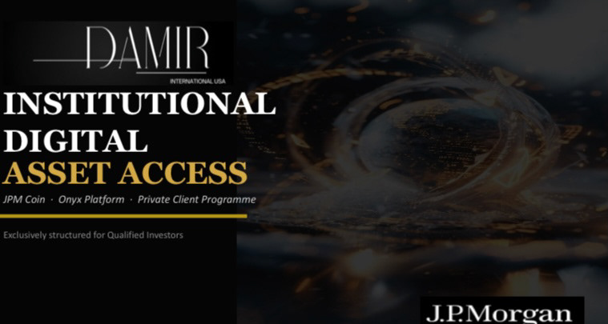
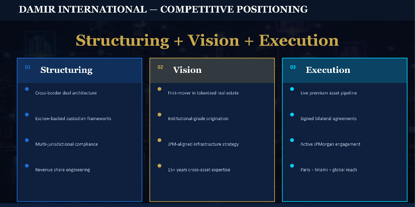
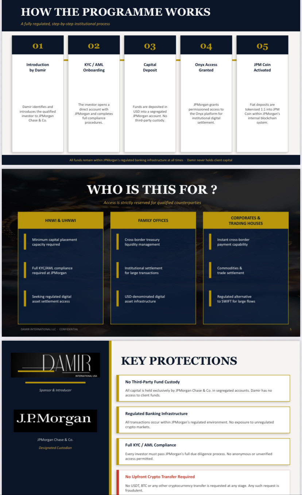
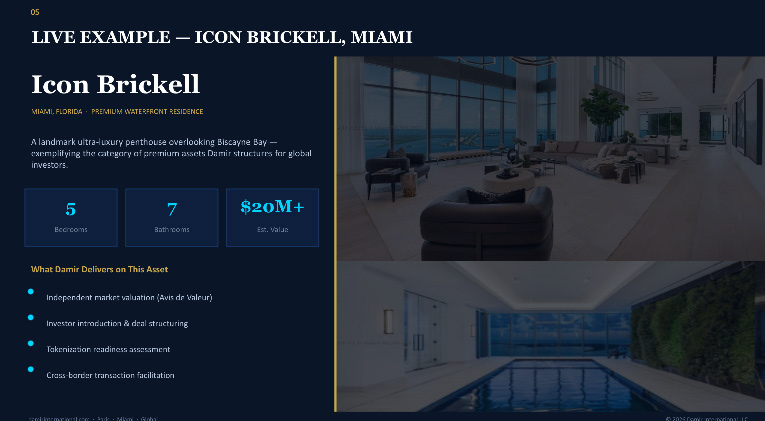
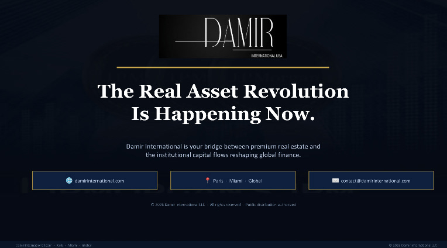

Tokenization & Capital Markets
2026Institutional Digital Liquidity Access — Private Mandate
Damir International LLC has validated a proprietary framework for institutional digital liquidity within a permissioned blockchain environment.
The structure integrates compliant onboarding, asset-backed tokenization, and full alignment with regulated banking systems.
Engagement is strictly limited to a select number of strategic counterparties.






